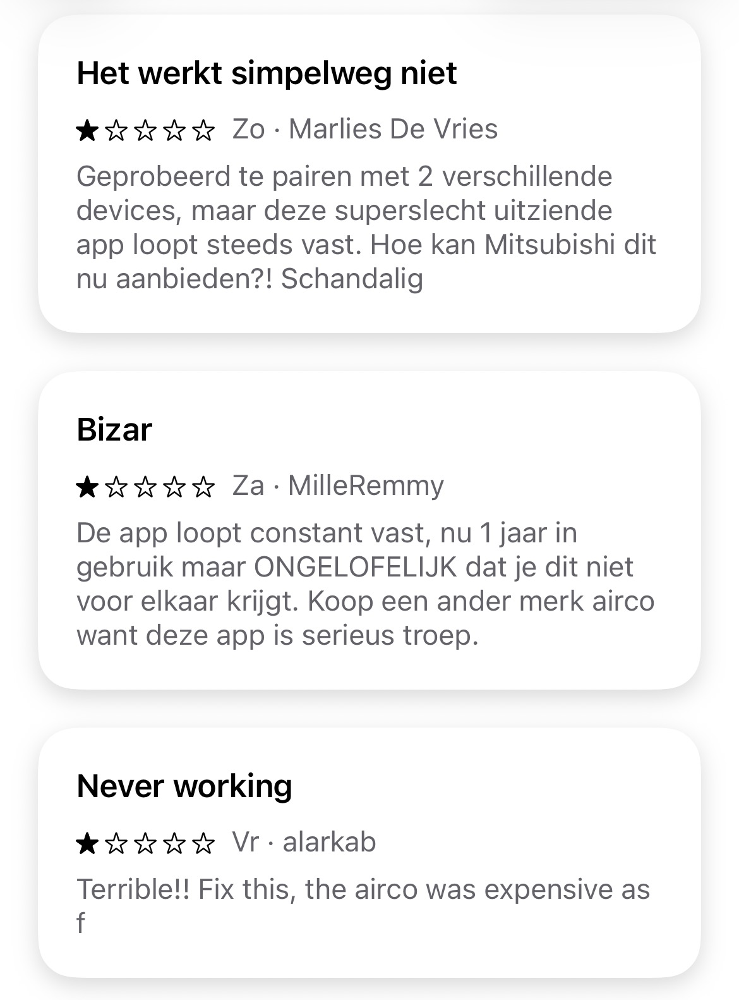
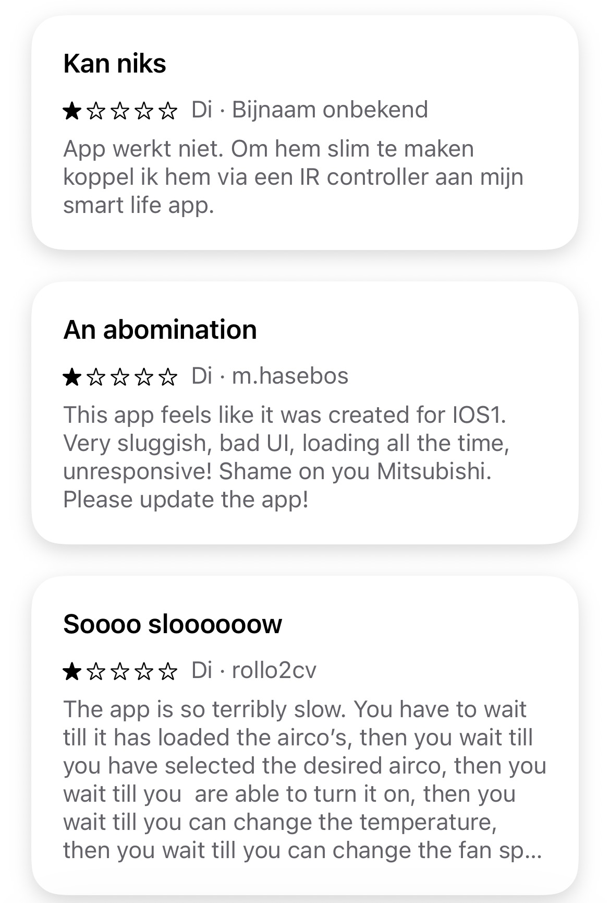
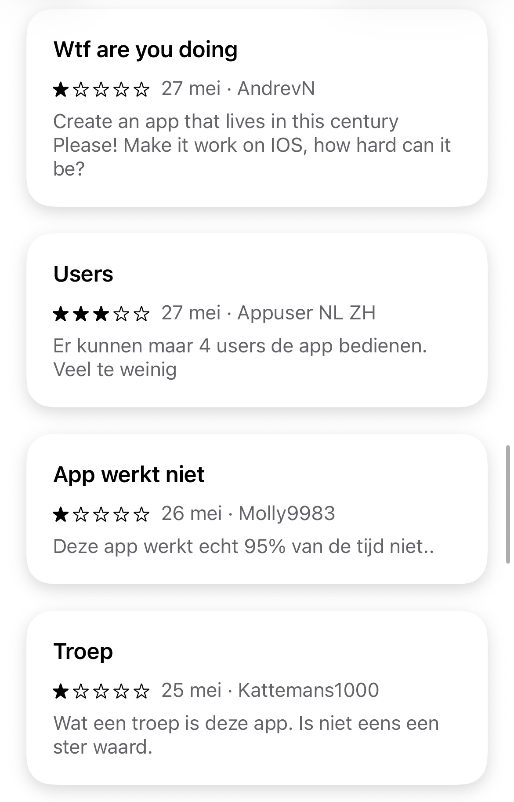
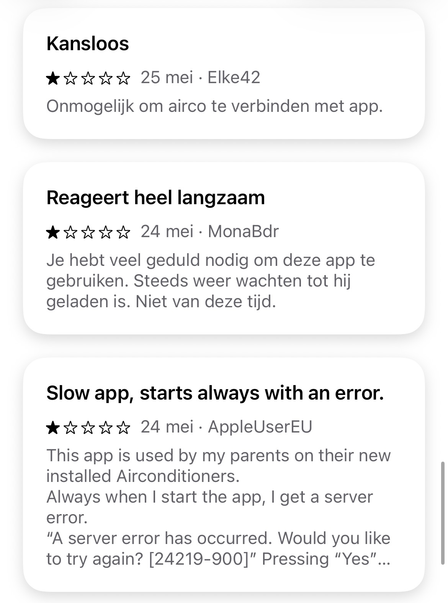
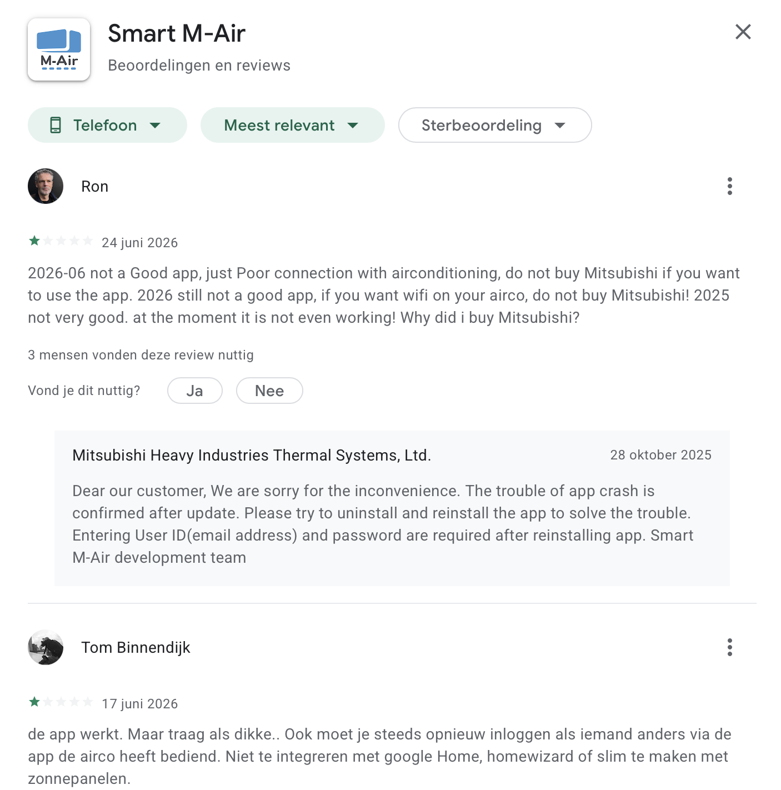
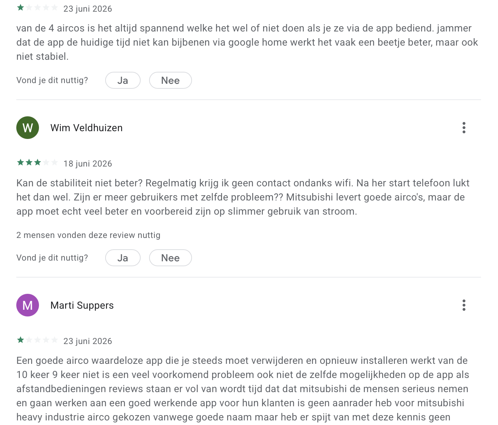
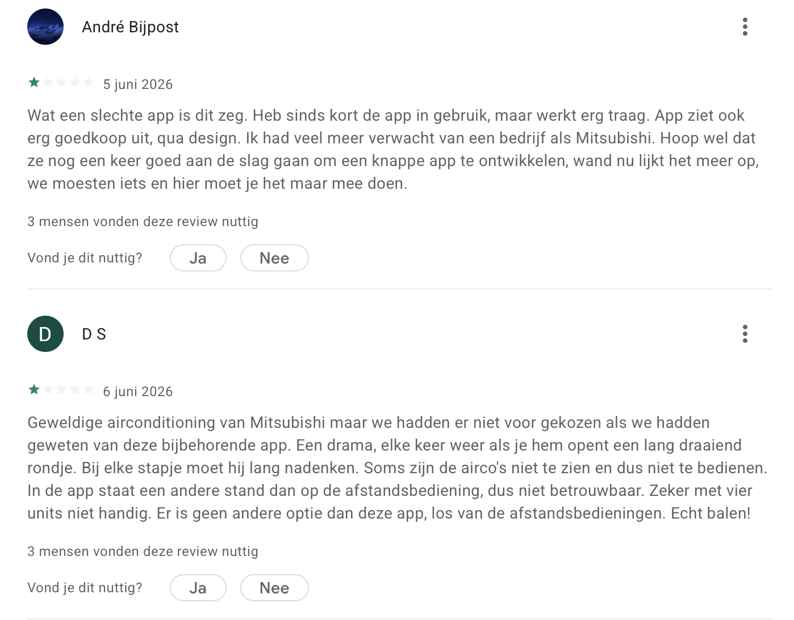
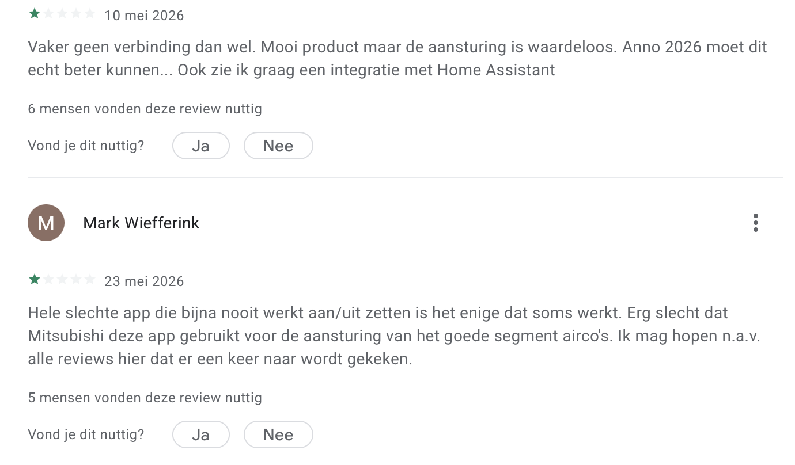

Onafhankelijke verzameling van gebruikerservaringen, reviews, bekende problemen en alternatieve oplossingen voor de Smart M-Air app.
Lees ervaringen Waarom deze website?App Store reviews (Nederland)
App Store score (Nederland)
Google Play reviews (wereldwijd)
Google Play score (wereldwijd)
Deze website is ontstaan nadat ik maandenlang tevergeefs heb geprobeerd de Smart M-Air app van Mitsubishi Heavy Industries betrouwbaar te laten functioneren.
De afgelopen maanden heb ik meer dan 100 uur besteed aan onderzoek, testen, configureren en zelfs het volledig vervangen van mijn thuisnetwerk. Ondanks al deze inspanningen bleven dezelfde problemen terugkeren.
Tijdens mijn zoektocht ontdekte ik dat ik bepaald niet de enige ben. Wereldwijd melden gebruikers al jarenlang vergelijkbare problemen, variërend van trage reacties en verbindingsfouten tot inlogproblemen en wegvallende apparaten.
Met deze website wil ik gebruikerservaringen uit Nederland en daarbuiten bundelen, zodat consumenten beter geïnformeerd zijn en leveranciers en fabrikanten worden gestimuleerd om structurele verbeteringen door te voeren.
Reactietijden van tientallen seconden tot minuten.
Alle communicatie verloopt via externe servers.
Opdrachten worden niet altijd uitgevoerd.
Gebruikers moeten regelmatig opnieuw inloggen.
Onderstaande screenshots tonen een selectie van recente beoordelingen uit de Apple App Store. Deze voorbeelden illustreren de terugkerende klachten over snelheid, verbindingsproblemen, serverfouten en gebruiksvriendelijkheid.




De Google Play Store toont voor Android-gebruikers een identiek beeld. Consumenten zijn zeer te spreken over de kwaliteit van de Mitsubishi Heavy Industries airconditioners (de hardware), maar de officiële Smart M-Air app wordt massaal beoordeeld met slechts 1 ster.
De onderstaande recente screenshots illustreren de aanhoudende frustraties in 2026: extreem trage reactietijden ("draaiende rondjes"), het telkens opnieuw moeten inloggen zodra een ander gezinslid de app gebruikt, synchronatiefouten tussen de app en fysieke afstandsbedieningen, en het hardnekkige gebrek aan stabiele integraties met smart home-platforms zoals Home Assistant of Google Home.




Deze pagina bundelt publieke gebruikerservaringen, forumdiscussies en app store reviews over de Smart M-Air app van Mitsubishi Heavy Industries. Het doel is om een gestructureerd overzicht te bieden van terugkerende patronen in plaats van losse individuele ervaringen.
Veel gebruikers rapporteren dat de airco regelmatig de verbinding met de app verliest of “geen communicatie” toont.
Terugkerend probleem is het opnieuw moeten inloggen of het wegvallen van gekoppelde apparaten.
Commando’s via de app worden vaak vertraagd uitgevoerd of komen helemaal niet aan.
Bij gebruik door meerdere gezinsleden op hetzelfde account ontstaan synchronisatieproblemen.
Zeer lage gemiddelde score (±1,0/5) op basis van duizenden internationale reviews. Gebruikers noemen vooral stabiliteits- en verbindingsproblemen.
Discussies over wegvallende verbindingen en problemen bij meerdere gebruikers op één account.
Technische threads over integratieproblemen, firmware-issues en cloud-afhankelijkheid.
Meldingen van instabiele apparaatstatus (“onbeschikbaar”) bij koppeling met modules zoals WF-RAC.
Technische analyses en discussies over architectuur en mogelijke workarounds via smart home systemen.
Variërende maar lage scores in meerdere landen, met structurele klachten over performance en betrouwbaarheid.
Op basis van publieke reviews, forumdiscussies en gebruikerservaringen ontstaat een opvallend patroon: de aard van de klachten verandert nauwelijks door de jaren heen. Hoewel nieuwe versies van de app zijn uitgebracht, blijven veel van dezelfde problemen terugkeren.
Veel gebruikers beschrijven de eerste generatie Smart M-Air als functioneel maar onbetrouwbaar.
Gebruikers beginnen te vermoeden dat de cloudarchitectuur een belangrijke oorzaak is van de vertragingen.
Steeds meer klachten gaan niet meer over de airco zelf, maar over de softwareomgeving eromheen.
Smart home gebruikers zoeken steeds vaker naar alternatieve oplossingen via Home Assistant en Homey.
Uit recente reviews blijkt dat veel van de klachten die al vanaf 2019 worden genoemd nog steeds terugkomen.
Een opvallende conclusie uit openbare reviews en forumdiscussies is dat veel klachten door de jaren heen terugkeren.
| Probleem | Gemeld sinds | Nog zichtbaar in 2026 |
| Trage bediening | 2019 | Ja |
| Verbindingsproblemen | 2019 | Ja |
| Cloudvertragingen | 2020 | Ja |
| Opnieuw moeten inloggen | 2021 | Ja |
| Multi-user problemen | 2022 | Ja |
| Instabiele apparaatstatus | 2023 | Ja |
| Mesh-router compatibiliteit | 2024 | Gedeeltelijk |
Dat betekent niet dat iedere gebruiker deze problemen ervaart. Wel laten publieke reviews zien dat dezelfde categorieën klachten gedurende meerdere jaren terugkomen.
| Installatie | Mitsubishi Heavy industries Triple 2.0 kW + 2.0 kW + 3.5 kW |
| Wifi-netwerk | Eigen 2.4 GHz netwerk met sterk signaal |
| Uitgevoerde tests | De app op alle devices verwijderd, apps opnieuw ingesteld, eerst alleen met 1 app gewerkt op 1 device, accounts opnieuw aangemaakt, modules opnieuw toegevoegd, dedicated 2.4 ghz netwerk aangemaakt, mijn complete netwerk vervangen (van Asus naar TP-link BE65), dedicated IoT (2.4 ghz) netwerk aangemaakt, signaal sterkte per module verbeterd, fixed IP adres toegewezen aan de 3 modules, meerdere malen filmpjes gemaakt van de werking en overhandigd aan leverancier. |
| Resultaat | Geen structurele verbetering |
Heb je langdurige problemen met Smart M-Air en kom je er samen met je installateur of leverancier niet uit? Doorloop dan onderstaande stappen.
Meld de storing schriftelijk bij je installateur of leverancier en vraag om een oplossing. Bewaar e-mails, screenshots en eventuele foutmeldingen.
Geef de leverancier een redelijke termijn om het probleem te onderzoeken en op te lossen.
Maak video's van de problemen, noteer datums en bewaar alle communicatie.
Blijft het probleem bestaan? Vraag dan schriftelijk om een structurele oplossing.
Wanneer de leverancier ondanks meerdere herstelpogingen geen oplossing biedt, kun je overwegen een ingebrekestelling te sturen.
Download voorbeeldbriefHeb jij ervaring met Smart M-air? Help andere gebruikers door jouw ervaring te delen.
Deel jouw ervaring